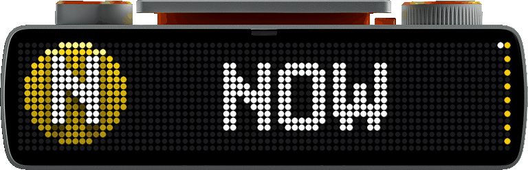
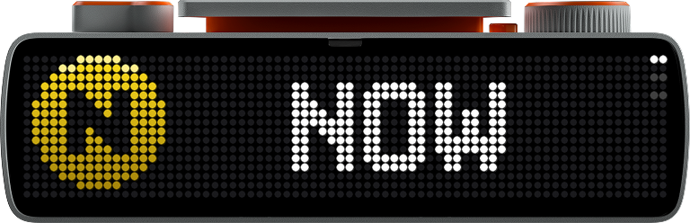
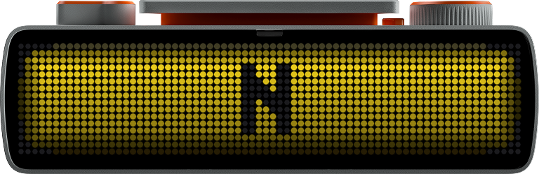
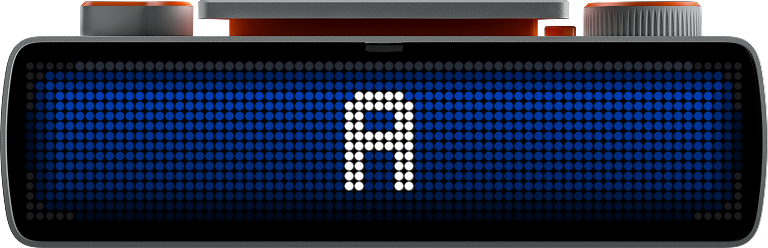

Live next-train departures for any station in the system, on the 72×16 LED matrix of a BUSY Bar.

Station, direction, and optionally the lines you care about — straight from the MTA's realtime feeds. No API key, no account.
1–7, A–Z, the shuttles, the Staten Island Railway. A 496-station directory is baked in; multi-line stations like Canal St just work.
Route bullets and departure animations are generated for exactly the routes your station serves, then uploaded to the device once.
When a train leaves, a compiled .anim sweeps the line's
color across the display — played by the device itself, smooth over
USB, Wi‑Fi, or cloud.
Shows when the Bar's switch is on OFF and yields to everything else. The dial scrolls upcoming trains; each position dot takes its train's line color.



Environment variables, or CLI flags. In busybar-manager, make each station a variation and switch from the dashboard.
# bare python — finds the Bar over USB, Wi-Fi, or cloud pip install requests websockets STATION="Bedford Av" DIRECTION=downtown python app.py
# busybar-manager: this repo is a library source; stations are variations
POST /api/_manager/library/repos {"repo": "Pranav-Karra-3301/busybar-nyc-subway"}
POST /api/_manager/library/install {"slug": "nyc-subway"}
PUT /api/_manager/apps/nyc-subway/variations/canal-st
{"env": {"STATION": "Canal St", "DIRECTION": "uptown", "ROUTES": "N,Q"}, "priority": 30}
| Var | Meaning |
|---|---|
STATION | Station name, fuzzily matched — all platforms of same-named stations merge |
DIRECTION | N / S / uptown / downtown, or a destination label like Brooklyn |
ROUTES | Optional filter (N,Q); default is every route the station serves |
STOPS | Exact GTFS platform ids (Q01N,R23N) for full control |
BUSYBAR_PRIORITY | 1 = only when the Bar is OFF (default) · 30+ = over the clock |
The BUSY Bar is an open device: a 72×16 RGB LED matrix, a 160×80 back OLED, and an HTTP API over USB, LAN, and cloud.
| Front display | 72×16 RGB LED matrix · 60 Hz · adaptive brightness · element lists that merge by id |
|---|---|
| Departure flash | Firmware bicycle0 .anim — RLE frames, ~15 KiB per route, compiled by a stdlib port of the firmware's own encoder |
| Glyphs | Extracted from the Bar's LVGL pixel fonts (OFL‑1.1) — a generated "W" is the letter the device itself would draw |
| Assets | Uploaded once, content-hash named, diffed against device storage on start |
| Every image here | A real frame dump off the hardware (GET /api/screen), re-rendered LED-for-LED into the official device art |